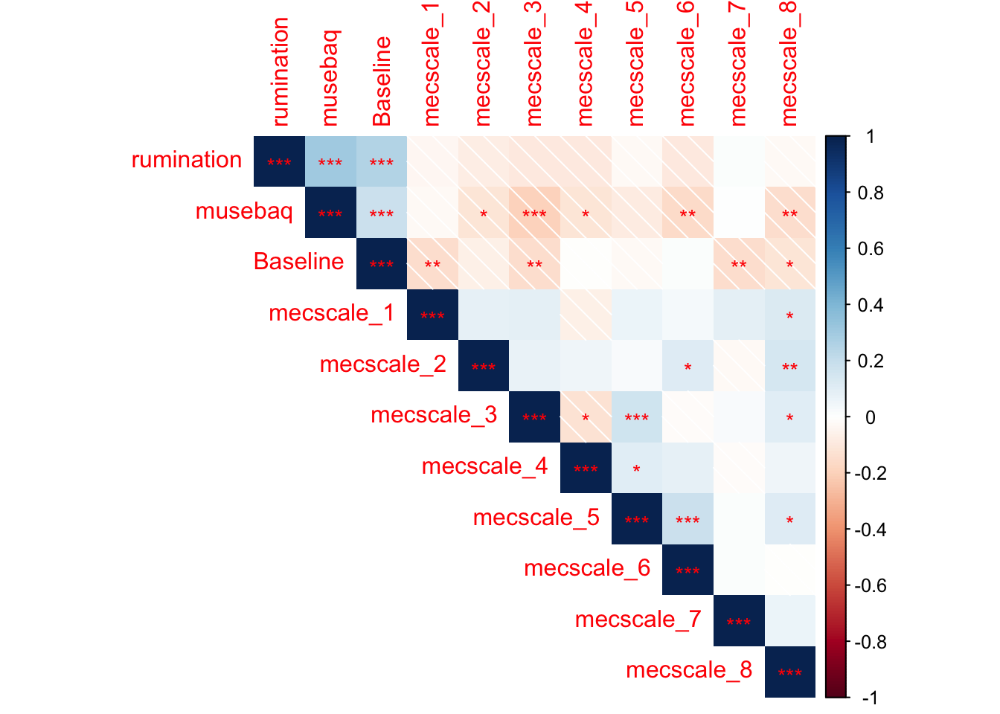
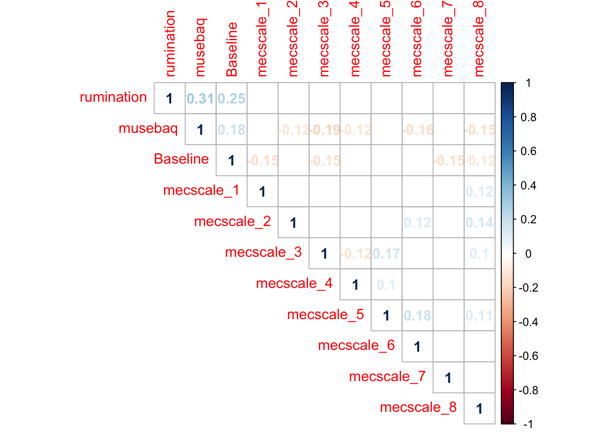
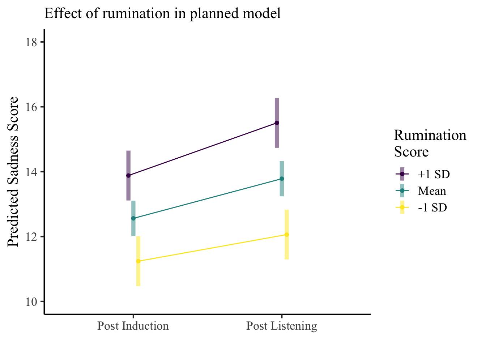
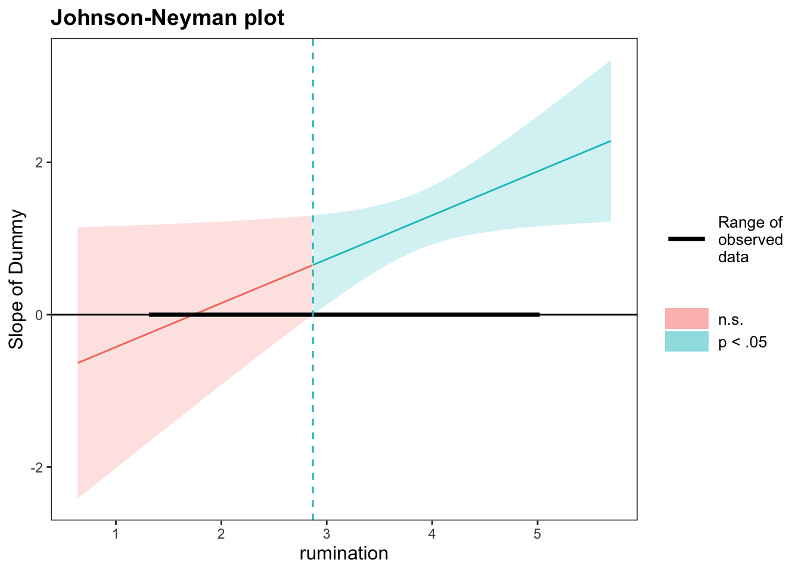
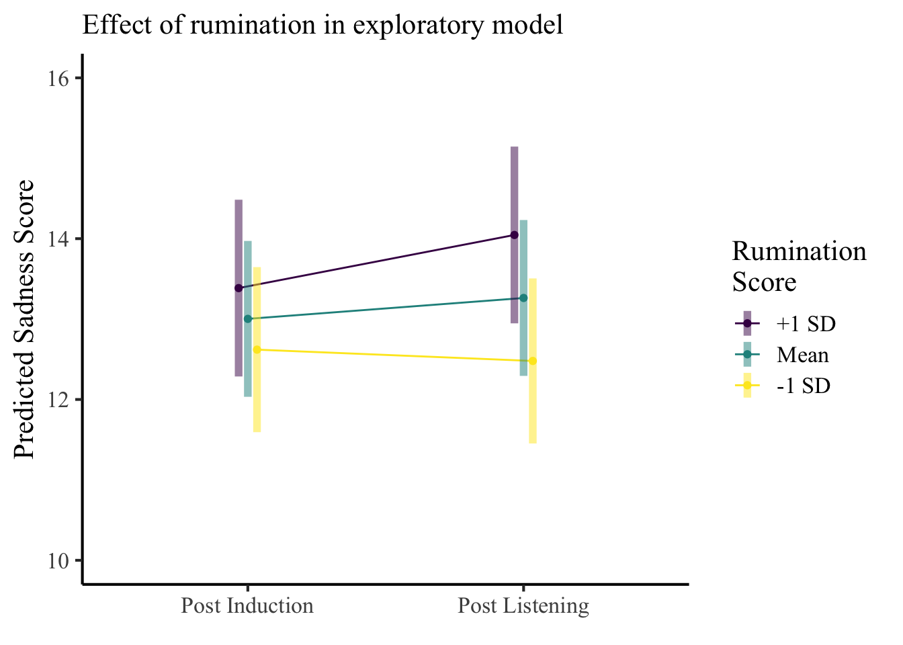
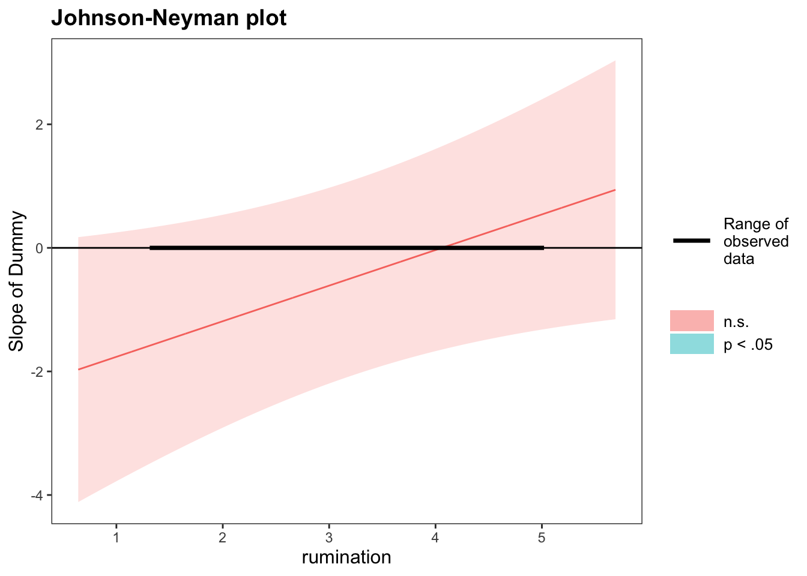

Rumination, Emotion Induction Mechanisms and Sad Music
Joel Larwood
Last updated: 2020-01-28
Checks: 6 1
Knit directory: RMER/
This reproducible R Markdown analysis was created with workflowr (version 1.4.0). The Checks tab describes the reproducibility checks that were applied when the results were created. The Past versions tab lists the development history.
The R Markdown file has unstaged changes. To know which version of the R Markdown file created these results, you’ll want to first commit it to the Git repo. If you’re still working on the analysis, you can ignore this warning. When you’re finished, you can run wflow_publish to commit the R Markdown file and build the HTML.
Great job! The global environment was empty. Objects defined in the global environment can affect the analysis in your R Markdown file in unknown ways. For reproduciblity it’s best to always run the code in an empty environment.
The command set.seed(20191213) was run prior to running the code in the R Markdown file. Setting a seed ensures that any results that rely on randomness, e.g. subsampling or permutations, are reproducible.
Great job! Recording the operating system, R version, and package versions is critical for reproducibility.
Nice! There were no cached chunks for this analysis, so you can be confident that you successfully produced the results during this run.
Great job! Using relative paths to the files within your workflowr project makes it easier to run your code on other machines.
Great! You are using Git for version control. Tracking code development and connecting the code version to the results is critical for reproducibility. The version displayed above was the version of the Git repository at the time these results were generated.
Note that you need to be careful to ensure that all relevant files for the analysis have been committed to Git prior to generating the results (you can use wflow_publish or wflow_git_commit). workflowr only checks the R Markdown file, but you know if there are other scripts or data files that it depends on. Below is the status of the Git repository when the results were generated:
Ignored files:
Ignored: .DS_Store
Ignored: .RData
Ignored: .Rhistory
Ignored: .Rproj.user/
Untracked files:
Untracked: analysis/RMER_November_AllAnalyses.knit.md
Untracked: analysis/RMER_November_AllAnalyses.utf8.md
Unstaged changes:
Modified: analysis/RMER_November_AllAnalyses.Rmd
Note that any generated files, e.g. HTML, png, CSS, etc., are not included in this status report because it is ok for generated content to have uncommitted changes.
These are the previous versions of the R Markdown and HTML files. If you’ve configured a remote Git repository (see ?wflow_git_remote), click on the hyperlinks in the table below to view them.
| File | Version | Author | Date | Message |
|---|---|---|---|---|
| Rmd | 6c477ca | joellarwood | 2020-01-28 | analyses complete sans music analyses |
| html | 6c477ca | joellarwood | 2020-01-28 | analyses complete sans music analyses |
| Rmd | 0093b02 | joellarwood | 2020-01-27 | models run. explore models with drop na to avoid errors from unanswered mecscale |
knitr::opts_chunk$set(autodep = TRUE, warning = FALSE, message = FALSE)
options(digits=3)library(tidyverse)
library(lmerTest)
library(buildmer)
library(psych)
library(kableExtra)
library(apa)
library(interactions)
library(corrplot)The code to clean the orginal data can be seen here and run with the following code chunk
source(here::here("code", "RMER_November18_Process.R"))The code to get the musical information can be seen here and run with the following code chunk. Be warned the script may take up to 30 minutes to complete. The datafolder contains data files which have the lyrics as well as the sentiment metrics.
Data joins
The data from spotify and the data from self report were joined together
data <- read_rds(here::here("data", "RMER_November2018_ProcessedWide.rds")) Descriptives of data
Demographic Measures
Age
The mean age was 21.89 with a standard deviation of 2.3
Gender
The gender counts can be seen in the table below.
data %>%
group_by(gender) %>%
summarise(gender_count = n()) %>%
knitr::kable(format = "html") %>%
kableExtra::kable_styling()| gender | gender_count |
|---|---|
| male | 165 |
| female | 214 |
| neither | 3 |
Trait measures
- Rumination
- MUSEBAQ - Emotion and Cognitive regulation
data %>%
select(rumination, musebaq) %>%
psych::describe() %>%
select(n, mean, sd, min, max) %>%
knitr::kable(digits =2,
format = "html") %>%
kableExtra::kable_styling()| n | mean | sd | min | max | |
|---|---|---|---|---|---|
| rumination | 382 | 3.86 | 0.70 | 1.33 | 5 |
| musebaq | 382 | 32.56 | 7.86 | 9.00 | 45 |
Additionally the internal consistency for a) rumination was good, 0.91
b) the emotion and cognitive regulation scale of the MUSEBAQ was also good 0.91
Correlation Matrix
Means, standard deviations, and correlations with confidence intervals
Variable M SD 1 2 3
1. rumination 3.86 0.70
2. musebaq 32.56 7.86 .31**
[.22, .40]
3. Baseline 9.51 5.06 .25** .18**
[.15, .34] [.08, .28]
4. mecscale_1 0.75 0.43 -.03 -.02 -.15**
[-.13, .07] [-.12, .08] [-.25, -.05]
5. mecscale_2 0.20 0.40 -.07 -.12* -.07
[-.17, .03] [-.21, -.02] [-.17, .03]
6. mecscale_3 0.33 0.47 -.10 -.19** -.15**
[-.20, .00] [-.29, -.10] [-.24, -.05]
7. mecscale_4 0.26 0.44 -.09 -.12* -.00
[-.19, .01] [-.22, -.02] [-.10, .10]
8. mecscale_5 0.23 0.42 -.02 -.08 -.02
[-.12, .08] [-.18, .02] [-.12, .08]
9. mecscale_6 0.08 0.27 -.10 -.16** .02
[-.20, .00] [-.25, -.06] [-.08, .12]
10. mecscale_7 0.88 0.32 .01 .01 -.15**
[-.09, .11] [-.09, .11] [-.24, -.05]
11. mecscale_8 0.84 0.36 -.02 -.15** -.12*
[-.12, .08] [-.24, -.05] [-.22, -.02]
4 5 6 7 8 9
.09
[-.01, .19]
.09 .07
[-.01, .19] [-.03, .17]
-.07 .05 -.12*
[-.17, .03] [-.05, .15] [-.22, -.02]
.06 .03 .17** .10*
[-.04, .16] [-.07, .13] [.07, .27] [.00, .20]
.04 .12* -.02 .09 .18**
[-.06, .14] [.01, .21] [-.12, .08] [-.01, .19] [.08, .28]
.10 -.03 .02 -.01 .02 .02
[-.00, .20] [-.13, .07] [-.08, .12] [-.11, .09] [-.09, .12] [-.08, .12]
.12* .14** .10* .06 .11* -.00
[.02, .22] [.04, .24] [.00, .20] [-.04, .16] [.01, .21] [-.10, .10]
10
.07
[-.03, .17]
Note. M and SD are used to represent mean and standard deviation, respectively.
Values in square brackets indicate the 95% confidence interval.
The confidence interval is a plausible range of population correlations
that could have caused the sample correlation (Cumming, 2014).
* indicates p < .05. ** indicates p < .01.
M <- cor(select(data,
rumination, musebaq, Baseline, contains("mec")),
use = "pairwise.complete.obs")
res1 <- corrplot::cor.mtest(select(data,
rumination, musebaq, Baseline, contains("mec")), conf.level = .95)$p
shade <- corrplot::corrplot(M,
type = "upper",
method = "shade",
p.mat = res1,
insig = "label_sig",
sig.level = c(.001, .01, .05),
pch.cex = .9,
pch.col = "red")
| Version | Author | Date |
|---|---|---|
| 6c477ca | joellarwood | 2020-01-28 |
num <- corrplot::corrplot(M,
type = "upper",
method = "number",
p.mat = res1,
insig = "blank",
sig.level = .05,
pch.cex = .9,
pch.col = "red")
| Version | Author | Date |
|---|---|---|
| 6c477ca | joellarwood | 2020-01-28 |
Manipulation Check
apa::t_apa(apa::t_test(data$PostInduction, data$Baseline, paired = TRUE), format = "markdown")*t*(381) = 14.01, *p* < .001, *d* = 0.72The induction of sadness was succesful, t(382) = 14.02, p < .001, d = 0.72
Pre-to-Post testing
Nov18Long <- data %>%
select(ResponseId,
musebaq:Appraisal) %>%
pivot_longer(cols = PostInduction:PostListening,
names_to = "Timepoint",
names_ptypes = factor(),
values_to = "Sadness") %>%
mutate(Timepoint = fct_relevel(Timepoint,
"PostInduction"))Hypothesis Test
We predicted that sadness would decrease from pre to post listening and that rumination would not influence this.
apa::t_apa(apa::t_test(data$PostListening, data$PostInduction, paired = TRUE), format = "markdown")*t*(381) = 6.36, *p* < .001, *d* = 0.33This was not the case, with sadness increasing when not accounting for rumination, t(382) = 6.37, p < .001, d = 0.33, and an intertaction between timepoint and rumination
PostInductionTimePoints <- lmerTest::lmer(Sadness~1 + Timepoint + rumination + Timepoint:rumination + (1|ResponseId), data = Nov18Long)
sjPlot::tab_model(PostInductionTimePoints,
show.std = TRUE,
show.aic = TRUE,
show.df = TRUE
)| Sadness | |||||
|---|---|---|---|---|---|
| Predictors | Estimates | std. Beta | CI | standardized CI | p |
| (Intercept) | 5.24 | 2.19 – 8.30 | 0.001 | ||
| PostListening | -1.00 | -0.09 | -3.12 – 1.11 | -0.28 – 0.10 | 0.354 |
| rumination | 1.90 | 0.23 | 1.12 – 2.68 | 0.14 – 0.33 | <0.001 |
| TimepointPostListening:rumination | 0.58 | 0.20 | 0.04 – 1.12 | 0.01 – 0.39 | 0.037 |
| Random Effects | |||||
| σ2 | 7.00 | ||||
| τ00 ResponseId | 22.21 | ||||
| ICC | 0.76 | ||||
| N ResponseId | 382 | ||||
| Observations | 764 | ||||
| Marginal R2 / Conditional R2 | 0.085 / 0.781 | ||||
| AIC | 4427.978 | ||||
minrum <- mean(Nov18Long$rumination, na.rm = TRUE) - sd(Nov18Long$rumination, na.rm = TRUE)
meanrum <- mean(Nov18Long$rumination, na.rm = TRUE)
plusrum <- mean(Nov18Long$rumination, na.rm = TRUE) + sd(Nov18Long$rumination, na.rm = TRUE)
confirm_plot <- emmeans::emmip(emmeans::ref_grid(PostInductionTimePoints,
list(rumination = c(plusrum, meanrum, minrum), Timepoint = c("PostInduction", "PostListening"))),
rumination~Timepoint,
CI = TRUE) +
scale_x_discrete(labels = c("Post Induction", "Post Listening")) +
ggplot2::scale_colour_viridis_d(labels = c("+1 SD", "Mean", "-1 SD"),
name = "Rumination \nScore")+
ggplot2::ylab("Predicted Sadness Score") +
ggplot2::xlab(element_blank()) +
ggplot2::labs(subtitle = "Effect of rumination in planned model", hjust = 0) +
ggplot2::theme_classic(base_size = 16, base_family = "Times New Roman") +
ggplot2::scale_y_continuous(limits = c(10,18))
confirm_plot
| Version | Author | Date |
|---|---|---|
| 6c477ca | joellarwood | 2020-01-28 |
DummyLong <- Nov18Long %>%
mutate(Dummy = if_else(Timepoint == "PostInduction", 0, 1))
jn <- interactions::johnson_neyman(model = lmerTest::lmer(Sadness~1 + Dummy + rumination + Dummy:rumination + (1|ResponseId), data = DummyLong),
pred = "Dummy",
modx = "rumination")
upperJN <- jn$bounds[[2]]Johnson-Neyman intervals showed that the rumination did not predict increased sadness at post listening when scores were less that 2.87
jn$plot
| Version | Author | Date |
|---|---|---|
| 6c477ca | joellarwood | 2020-01-28 |
Exploring the role of traits
To explore the role of traits we did a greedy stepback regression using buildmer. All interactions between traits, including baseline mood (as a depression proxy), were included.
The returned model is below
traitexplore <- buildmer::buildmer(formula = Sadness~ 1+Timepoint*Baseline + Timepoint*musebaq +Timepoint*rumination + (1 | ResponseId),
data = Nov18Long,
direction='backward',
na.action=na.exclude,
control=lmerControl(optimizer='bobyqa'))@model grouping term block LRT
1 <NA> 1 NA NA 1 NA
2 <NA> Timepoint NA NA Timepoint NA
3 <NA> Baseline NA NA Baseline NA
4 <NA> Timepoint:Baseline NA NA Timepoint:Baseline 3.68e-02
5 <NA> musebaq NA NA musebaq NA
6 <NA> Timepoint:musebaq NA NA Timepoint:musebaq 3.45e-01
7 <NA> rumination NA NA rumination NA
8 <NA> Timepoint:rumination NA NA Timepoint:rumination 2.93e-02
9 ResponseId 1 NA ResponseId 1 3.68e-38
Iteration
1 1
2 1
3 1
4 1
5 1
6 1
7 1
8 1
9 1
grouping term block LRT
1 <NA> 1 NA NA 1 NA
2 <NA> Timepoint NA NA Timepoint NA
3 <NA> Baseline NA NA Baseline NA
4 <NA> Timepoint:Baseline NA NA Timepoint:Baseline 4.64e-02
5 <NA> musebaq NA NA musebaq 8.93e-03
7 <NA> rumination NA NA rumination NA
8 <NA> Timepoint:rumination NA NA Timepoint:rumination 1.13e-02
9 ResponseId 1 NA ResponseId 1 3.04e-38
Iteration
1 2
2 2
3 2
4 2
5 2
7 2
8 2
9 2sjPlot::tab_model(traitexplore)| Sadness | |||
|---|---|---|---|
| Predictors | Estimates | CI | p |
| (Intercept) | 2.17 | -0.36 – 4.70 | 0.093 |
| PostListening | -0.81 | -2.93 – 1.30 | 0.453 |
| Baseline | 0.73 | 0.64 – 0.81 | <0.001 |
| musebaq | 0.07 | 0.02 – 0.12 | 0.009 |
| rumination | 0.33 | -0.30 – 0.97 | 0.305 |
| TimepointPostListening:Baseline | -0.08 | -0.15 – -0.00 | 0.047 |
| TimepointPostListening:rumination | 0.72 | 0.16 – 1.27 | 0.012 |
| Random Effects | |||
| σ2 | 6.95 | ||
| τ00 ResponseId | 10.23 | ||
| ICC | 0.60 | ||
| N ResponseId | 382 | ||
| Observations | 764 | ||
| Marginal R2 / Conditional R2 | 0.463 / 0.783 | ||
Exploring the role of BRECVEMA mechanisms
BRECVEMAexplore <- buildmer::buildmer(Sadness~ 1+Timepoint*BSR +Timepoint*Entrainment + Timepoint*Contagion +Timepoint*Imagery+ Timepoint*Memory+Timepoint*Expectancy+Timepoint*Appraisal+ (1 | ResponseId),
data = Nov18Long,
direction='backward',
control=lmerControl(optimizer='bobyqa'))@modelError in na.fail.default(structure(list(Sadness = c(19, 24, 11, 11, 6, :
missing values in object
grouping term block LRT
1 <NA> 1 NA NA 1 NA
2 <NA> Timepoint NA NA Timepoint NA
3 <NA> BSR NA NA BSR NA
4 <NA> Timepoint:BSR NA NA Timepoint:BSR 0.0331
5 <NA> Entrainment NA NA Entrainment NA
6 <NA> Timepoint:Entrainment NA NA Timepoint:Entrainment 0.3875
7 <NA> Contagion NA NA Contagion NA
8 <NA> Timepoint:Contagion NA NA Timepoint:Contagion 0.0332
9 <NA> Imagery NA NA Imagery NA
10 <NA> Timepoint:Imagery NA NA Timepoint:Imagery 0.4590
11 <NA> Memory NA NA Memory NA
12 <NA> Timepoint:Memory NA NA Timepoint:Memory 0.0216
13 <NA> Expectancy NA NA Expectancy NA
14 <NA> Timepoint:Expectancy NA NA Timepoint:Expectancy 0.4283
15 <NA> Appraisal NA NA Appraisal NA
16 <NA> Timepoint:Appraisal NA NA Timepoint:Appraisal 0.0274
17 ResponseId 1 NA ResponseId 1 NaN
Iteration
1 1
2 1
3 1
4 1
5 1
6 1
7 1
8 1
9 1
10 1
11 1
12 1
13 1
14 1
15 1
16 1
17 1
Error in na.fail.default(structure(list(Sadness = c(19, 24, 11, 11, 6, :
missing values in object
grouping term block LRT
1 <NA> 1 NA NA 1 NA
2 <NA> Timepoint NA NA Timepoint NA
3 <NA> BSR NA NA BSR NA
4 <NA> Timepoint:BSR NA NA Timepoint:BSR 2.99e-02
5 <NA> Entrainment NA NA Entrainment NA
6 <NA> Timepoint:Entrainment NA NA Timepoint:Entrainment 3.81e-01
7 <NA> Contagion NA NA Contagion NA
8 <NA> Timepoint:Contagion NA NA Timepoint:Contagion 2.78e-02
9 <NA> Imagery NA NA Imagery 1.63e-08
11 <NA> Memory NA NA Memory NA
12 <NA> Timepoint:Memory NA NA Timepoint:Memory 1.38e-02
13 <NA> Expectancy NA NA Expectancy NA
14 <NA> Timepoint:Expectancy NA NA Timepoint:Expectancy 4.28e-01
15 <NA> Appraisal NA NA Appraisal NA
16 <NA> Timepoint:Appraisal NA NA Timepoint:Appraisal 3.22e-02
17 ResponseId 1 NA ResponseId 1 NaN
Iteration
1 2
2 2
3 2
4 2
5 2
6 2
7 2
8 2
9 2
11 2
12 2
13 2
14 2
15 2
16 2
17 2
Error in na.fail.default(structure(list(Sadness = c(19, 24, 11, 11, 6, :
missing values in object
grouping term block LRT
1 <NA> 1 NA NA 1 NA
2 <NA> Timepoint NA NA Timepoint NA
3 <NA> BSR NA NA BSR NA
4 <NA> Timepoint:BSR NA NA Timepoint:BSR 3.58e-02
5 <NA> Entrainment NA NA Entrainment NA
6 <NA> Timepoint:Entrainment NA NA Timepoint:Entrainment 4.02e-01
7 <NA> Contagion NA NA Contagion NA
8 <NA> Timepoint:Contagion NA NA Timepoint:Contagion 2.79e-02
9 <NA> Imagery NA NA Imagery 1.44e-08
11 <NA> Memory NA NA Memory NA
12 <NA> Timepoint:Memory NA NA Timepoint:Memory 1.44e-02
13 <NA> Expectancy NA NA Expectancy 1.92e-01
15 <NA> Appraisal NA NA Appraisal NA
16 <NA> Timepoint:Appraisal NA NA Timepoint:Appraisal 2.90e-02
17 ResponseId 1 NA ResponseId 1 NaN
Iteration
1 3
2 3
3 3
4 3
5 3
6 3
7 3
8 3
9 3
11 3
12 3
13 3
15 3
16 3
17 3
Error in na.fail.default(structure(list(Sadness = c(19, 24, 11, 11, 6, :
missing values in object
grouping term block LRT
1 <NA> 1 NA NA 1 NA
2 <NA> Timepoint NA NA Timepoint NA
3 <NA> BSR NA NA BSR NA
4 <NA> Timepoint:BSR NA NA Timepoint:BSR 4.12e-02
5 <NA> Entrainment NA NA Entrainment 1.05e-04
7 <NA> Contagion NA NA Contagion NA
8 <NA> Timepoint:Contagion NA NA Timepoint:Contagion 3.06e-02
9 <NA> Imagery NA NA Imagery 1.39e-08
11 <NA> Memory NA NA Memory NA
12 <NA> Timepoint:Memory NA NA Timepoint:Memory 1.79e-02
13 <NA> Expectancy NA NA Expectancy 1.92e-01
15 <NA> Appraisal NA NA Appraisal NA
16 <NA> Timepoint:Appraisal NA NA Timepoint:Appraisal 2.10e-02
17 ResponseId 1 NA ResponseId 1 NaN
Iteration
1 4
2 4
3 4
4 4
5 4
7 4
8 4
9 4
11 4
12 4
13 4
15 4
16 4
17 4
Error in na.fail.default(structure(list(Sadness = c(19, 24, 11, 11, 6, :
missing values in object
grouping term block LRT
1 <NA> 1 NA NA 1 NA
2 <NA> Timepoint NA NA Timepoint NA
3 <NA> BSR NA NA BSR NA
4 <NA> Timepoint:BSR NA NA Timepoint:BSR 4.12e-02
5 <NA> Entrainment NA NA Entrainment 1.54e-04
7 <NA> Contagion NA NA Contagion NA
8 <NA> Timepoint:Contagion NA NA Timepoint:Contagion 3.06e-02
9 <NA> Imagery NA NA Imagery 1.26e-08
11 <NA> Memory NA NA Memory NA
12 <NA> Timepoint:Memory NA NA Timepoint:Memory 1.79e-02
15 <NA> Appraisal NA NA Appraisal NA
16 <NA> Timepoint:Appraisal NA NA Timepoint:Appraisal 2.10e-02
17 ResponseId 1 NA ResponseId 1 NaN
Iteration
1 5
2 5
3 5
4 5
5 5
7 5
8 5
9 5
11 5
12 5
15 5
16 5
17 5sjPlot::tab_model(BRECVEMAexplore,
show.std = TRUE,
pred.labels = FALSE)| Sadness | |||||
|---|---|---|---|---|---|
| Predictors | Estimates | std. Beta | CI | standardized CI | p |
| (Intercept) | 10.94 | 8.62 – 13.26 | <0.001 | ||
| TimepointPostListening | -1.01 | -0.09 | -2.44 – 0.41 | -0.22 – 0.04 | 0.165 |
| BSRYes | 1.06 | 0.08 | -0.24 – 2.36 | -0.02 – 0.18 | 0.111 |
| EntrainmentYes | 1.00 | 0.07 | -0.32 – 2.33 | -0.02 – 0.17 | 0.140 |
| ContagionYes | -0.26 | -0.02 | -1.54 – 1.03 | -0.12 – 0.08 | 0.697 |
| ImageryYes | 0.64 | 0.05 | -0.64 – 1.91 | -0.05 – 0.14 | 0.328 |
| MemoryYes | -0.19 | -0.01 | -2.26 – 1.87 | -0.11 – 0.09 | 0.855 |
| AppraisalYes | 3.01 | 0.19 | 1.44 – 4.58 | 0.09 – 0.29 | <0.001 |
| TimepointPostListening:BSRYes | 0.91 | 0.05 | 0.03 – 1.78 | 0.00 – 0.10 | 0.043 |
| TimepointPostListening:ContagionYes | 0.95 | 0.08 | 0.09 – 1.82 | 0.01 – 0.16 | 0.032 |
| TimepointPostListening:MemoryYes | 1.65 | 0.15 | 0.28 – 3.02 | 0.02 – 0.27 | 0.019 |
| TimepointPostListening:AppraisalYes | -1.23 | -0.06 | -2.28 – -0.18 | -0.11 – -0.01 | 0.022 |
| Random Effects | |||||
| σ2 | 6.85 | ||||
| τ00 ResponseId | 23.19 | ||||
| ICC | 0.77 | ||||
| N ResponseId | 377 | ||||
| Observations | 754 | ||||
| Marginal R2 / Conditional R2 | 0.075 / 0.789 | ||||
All predictors
grouping term block LRT
1 <NA> 1 NA NA 1 NA
2 <NA> Timepoint NA NA Timepoint NA
3 <NA> BSR NA NA BSR NA
4 <NA> Timepoint:BSR NA NA Timepoint:BSR 2.05e-02
5 <NA> Entrainment NA NA Entrainment NA
6 <NA> Timepoint:Entrainment NA NA Timepoint:Entrainment 3.52e-01
7 <NA> Contagion NA NA Contagion NA
8 <NA> Timepoint:Contagion NA NA Timepoint:Contagion 5.77e-02
9 <NA> Imagery NA NA Imagery NA
10 <NA> Timepoint:Imagery NA NA Timepoint:Imagery 4.59e-01
11 <NA> Memory NA NA Memory NA
12 <NA> Timepoint:Memory NA NA Timepoint:Memory 5.12e-02
13 <NA> Expectancy NA NA Expectancy NA
14 <NA> Timepoint:Expectancy NA NA Timepoint:Expectancy 6.44e-01
15 <NA> Appraisal NA NA Appraisal NA
16 <NA> Timepoint:Appraisal NA NA Timepoint:Appraisal 3.02e-02
17 <NA> Baseline NA NA Baseline NA
18 <NA> Timepoint:Baseline NA NA Timepoint:Baseline 5.01e-02
19 <NA> musebaq NA NA musebaq NA
20 <NA> Timepoint:musebaq NA NA Timepoint:musebaq 3.50e-01
21 <NA> rumination NA NA rumination NA
22 <NA> Timepoint:rumination NA NA Timepoint:rumination 8.25e-02
23 ResponseId 1 NA ResponseId 1 1.62e-37
Iteration
1 1
2 1
3 1
4 1
5 1
6 1
7 1
8 1
9 1
10 1
11 1
12 1
13 1
14 1
15 1
16 1
17 1
18 1
19 1
20 1
21 1
22 1
23 1
grouping term block LRT
1 <NA> 1 NA NA 1 NA
2 <NA> Timepoint NA NA Timepoint NA
3 <NA> BSR NA NA BSR NA
4 <NA> Timepoint:BSR NA NA Timepoint:BSR 2.22e-02
5 <NA> Entrainment NA NA Entrainment NA
6 <NA> Timepoint:Entrainment NA NA Timepoint:Entrainment 3.65e-01
7 <NA> Contagion NA NA Contagion NA
8 <NA> Timepoint:Contagion NA NA Timepoint:Contagion 5.81e-02
9 <NA> Imagery NA NA Imagery NA
10 <NA> Timepoint:Imagery NA NA Timepoint:Imagery 4.59e-01
11 <NA> Memory NA NA Memory NA
12 <NA> Timepoint:Memory NA NA Timepoint:Memory 5.28e-02
13 <NA> Expectancy NA NA Expectancy 4.01e-01
15 <NA> Appraisal NA NA Appraisal NA
16 <NA> Timepoint:Appraisal NA NA Timepoint:Appraisal 2.86e-02
17 <NA> Baseline NA NA Baseline NA
18 <NA> Timepoint:Baseline NA NA Timepoint:Baseline 3.96e-02
19 <NA> musebaq NA NA musebaq NA
20 <NA> Timepoint:musebaq NA NA Timepoint:musebaq 3.38e-01
21 <NA> rumination NA NA rumination NA
22 <NA> Timepoint:rumination NA NA Timepoint:rumination 8.09e-02
23 ResponseId 1 NA ResponseId 1 1.09e-37
Iteration
1 2
2 2
3 2
4 2
5 2
6 2
7 2
8 2
9 2
10 2
11 2
12 2
13 2
15 2
16 2
17 2
18 2
19 2
20 2
21 2
22 2
23 2
grouping term block LRT
1 <NA> 1 NA NA 1 NA
2 <NA> Timepoint NA NA Timepoint NA
3 <NA> BSR NA NA BSR NA
4 <NA> Timepoint:BSR NA NA Timepoint:BSR 2.00e-02
5 <NA> Entrainment NA NA Entrainment NA
6 <NA> Timepoint:Entrainment NA NA Timepoint:Entrainment 3.57e-01
7 <NA> Contagion NA NA Contagion NA
8 <NA> Timepoint:Contagion NA NA Timepoint:Contagion 4.98e-02
9 <NA> Imagery NA NA Imagery 1.32e-08
11 <NA> Memory NA NA Memory NA
12 <NA> Timepoint:Memory NA NA Timepoint:Memory 3.66e-02
13 <NA> Expectancy NA NA Expectancy 4.01e-01
15 <NA> Appraisal NA NA Appraisal NA
16 <NA> Timepoint:Appraisal NA NA Timepoint:Appraisal 3.35e-02
17 <NA> Baseline NA NA Baseline NA
18 <NA> Timepoint:Baseline NA NA Timepoint:Baseline 4.01e-02
19 <NA> musebaq NA NA musebaq NA
20 <NA> Timepoint:musebaq NA NA Timepoint:musebaq 3.27e-01
21 <NA> rumination NA NA rumination NA
22 <NA> Timepoint:rumination NA NA Timepoint:rumination 8.30e-02
23 ResponseId 1 NA ResponseId 1 8.10e-38
Iteration
1 3
2 3
3 3
4 3
5 3
6 3
7 3
8 3
9 3
11 3
12 3
13 3
15 3
16 3
17 3
18 3
19 3
20 3
21 3
22 3
23 3
grouping term block LRT
1 <NA> 1 NA NA 1 NA
2 <NA> Timepoint NA NA Timepoint NA
3 <NA> BSR NA NA BSR NA
4 <NA> Timepoint:BSR NA NA Timepoint:BSR 2.00e-02
5 <NA> Entrainment NA NA Entrainment NA
6 <NA> Timepoint:Entrainment NA NA Timepoint:Entrainment 3.57e-01
7 <NA> Contagion NA NA Contagion NA
8 <NA> Timepoint:Contagion NA NA Timepoint:Contagion 4.98e-02
9 <NA> Imagery NA NA Imagery 1.59e-08
11 <NA> Memory NA NA Memory NA
12 <NA> Timepoint:Memory NA NA Timepoint:Memory 3.66e-02
15 <NA> Appraisal NA NA Appraisal NA
16 <NA> Timepoint:Appraisal NA NA Timepoint:Appraisal 3.35e-02
17 <NA> Baseline NA NA Baseline NA
18 <NA> Timepoint:Baseline NA NA Timepoint:Baseline 4.01e-02
19 <NA> musebaq NA NA musebaq NA
20 <NA> Timepoint:musebaq NA NA Timepoint:musebaq 3.27e-01
21 <NA> rumination NA NA rumination NA
22 <NA> Timepoint:rumination NA NA Timepoint:rumination 8.30e-02
23 ResponseId 1 NA ResponseId 1 8.34e-38
Iteration
1 4
2 4
3 4
4 4
5 4
6 4
7 4
8 4
9 4
11 4
12 4
15 4
16 4
17 4
18 4
19 4
20 4
21 4
22 4
23 4
grouping term block LRT
1 <NA> 1 NA NA 1 NA
2 <NA> Timepoint NA NA Timepoint NA
3 <NA> BSR NA NA BSR NA
4 <NA> Timepoint:BSR NA NA Timepoint:BSR 2.34e-02
5 <NA> Entrainment NA NA Entrainment 1.27e-03
7 <NA> Contagion NA NA Contagion NA
8 <NA> Timepoint:Contagion NA NA Timepoint:Contagion 5.37e-02
9 <NA> Imagery NA NA Imagery 1.53e-08
11 <NA> Memory NA NA Memory NA
12 <NA> Timepoint:Memory NA NA Timepoint:Memory 4.46e-02
15 <NA> Appraisal NA NA Appraisal NA
16 <NA> Timepoint:Appraisal NA NA Timepoint:Appraisal 2.48e-02
17 <NA> Baseline NA NA Baseline NA
18 <NA> Timepoint:Baseline NA NA Timepoint:Baseline 3.77e-02
19 <NA> musebaq NA NA musebaq NA
20 <NA> Timepoint:musebaq NA NA Timepoint:musebaq 3.51e-01
21 <NA> rumination NA NA rumination NA
22 <NA> Timepoint:rumination NA NA Timepoint:rumination 8.83e-02
23 ResponseId 1 NA ResponseId 1 6.76e-38
Iteration
1 5
2 5
3 5
4 5
5 5
7 5
8 5
9 5
11 5
12 5
15 5
16 5
17 5
18 5
19 5
20 5
21 5
22 5
23 5
grouping term block LRT
1 <NA> 1 NA NA 1 NA
2 <NA> Timepoint NA NA Timepoint NA
3 <NA> BSR NA NA BSR NA
4 <NA> Timepoint:BSR NA NA Timepoint:BSR 2.42e-02
5 <NA> Entrainment NA NA Entrainment 1.27e-03
7 <NA> Contagion NA NA Contagion NA
8 <NA> Timepoint:Contagion NA NA Timepoint:Contagion 4.38e-02
9 <NA> Imagery NA NA Imagery 1.72e-08
11 <NA> Memory NA NA Memory NA
12 <NA> Timepoint:Memory NA NA Timepoint:Memory 3.20e-02
15 <NA> Appraisal NA NA Appraisal NA
16 <NA> Timepoint:Appraisal NA NA Timepoint:Appraisal 3.21e-02
17 <NA> Baseline NA NA Baseline NA
18 <NA> Timepoint:Baseline NA NA Timepoint:Baseline 4.79e-02
19 <NA> musebaq NA NA musebaq 5.18e-02
21 <NA> rumination NA NA rumination NA
22 <NA> Timepoint:rumination NA NA Timepoint:rumination 4.20e-02
23 ResponseId 1 NA ResponseId 1 5.52e-38
Iteration
1 6
2 6
3 6
4 6
5 6
7 6
8 6
9 6
11 6
12 6
15 6
16 6
17 6
18 6
19 6
21 6
22 6
23 6
grouping term block LRT
1 <NA> 1 NA NA 1 NA
2 <NA> Timepoint NA NA Timepoint NA
3 <NA> BSR NA NA BSR NA
4 <NA> Timepoint:BSR NA NA Timepoint:BSR 2.42e-02
5 <NA> Entrainment NA NA Entrainment 1.21e-03
7 <NA> Contagion NA NA Contagion NA
8 <NA> Timepoint:Contagion NA NA Timepoint:Contagion 4.38e-02
9 <NA> Imagery NA NA Imagery 1.21e-08
11 <NA> Memory NA NA Memory NA
12 <NA> Timepoint:Memory NA NA Timepoint:Memory 3.20e-02
15 <NA> Appraisal NA NA Appraisal NA
16 <NA> Timepoint:Appraisal NA NA Timepoint:Appraisal 3.21e-02
17 <NA> Baseline NA NA Baseline NA
18 <NA> Timepoint:Baseline NA NA Timepoint:Baseline 4.79e-02
21 <NA> rumination NA NA rumination NA
22 <NA> Timepoint:rumination NA NA Timepoint:rumination 4.20e-02
23 ResponseId 1 NA ResponseId 1 2.28e-38
Iteration
1 7
2 7
3 7
4 7
5 7
7 7
8 7
9 7
11 7
12 7
15 7
16 7
17 7
18 7
21 7
22 7
23 7sjPlot::tab_model(AllExplore)| Sadness | |||
|---|---|---|---|
| Predictors | Estimates | CI | p |
| (Intercept) | 2.64 | -0.11 – 5.39 | 0.061 |
| PostListening | -2.34 | -4.74 – 0.06 | 0.057 |
| Yes | -0.04 | -1.02 – 0.95 | 0.943 |
| Yes | 0.49 | -0.46 – 1.44 | 0.314 |
| Yes | -0.32 | -1.29 – 0.66 | 0.523 |
| Yes | 0.59 | -0.33 – 1.50 | 0.210 |
| Yes | 0.02 | -1.54 – 1.58 | 0.978 |
| Yes | 1.91 | 0.72 – 3.09 | 0.002 |
| Baseline | 0.72 | 0.64 – 0.81 | <0.001 |
| rumination | 0.55 | -0.08 – 1.18 | 0.086 |
| TimepointPostListening:BSRYes | 1.00 | 0.13 – 1.88 | 0.026 |
| TimepointPostListening:ContagionYes | 0.88 | 0.02 – 1.75 | 0.046 |
| TimepointPostListening:MemoryYes | 1.49 | 0.12 – 2.85 | 0.034 |
| TimepointPostListening:AppraisalYes | -1.14 | -2.19 – -0.09 | 0.034 |
| TimepointPostListening:Baseline | -0.08 | -0.15 – -0.00 | 0.050 |
| TimepointPostListening:rumination | 0.58 | 0.02 – 1.14 | 0.044 |
| Random Effects | |||
| σ2 | 6.77 | ||
| τ00 ResponseId | 10.25 | ||
| ICC | 0.60 | ||
| N ResponseId | 377 | ||
| Observations | 754 | ||
| Marginal R2 / Conditional R2 | 0.474 / 0.791 | ||
RumExpl <- emmeans::emmip(emmeans::ref_grid(AllExplore,
list(rumination = c(plusrum, meanrum, minrum), Timepoint = c("PostInduction", "PostListening"))),
rumination~Timepoint,
CI = TRUE) +
scale_x_discrete(labels = c("Post Induction", "Post Listening")) +
ggplot2::scale_colour_viridis_d(labels = c("+1 SD", "Mean", "-1 SD"),
name = "Rumination \nScore")+
ggplot2::ylab("Predicted Sadness Score") +
ggplot2::xlab("Timepoint") +
scale_x_discrete(labels = c("Post Induction", "Post Listening")) +
ggplot2::scale_colour_viridis_d(labels = c("+1 SD", "Mean", "-1 SD"),
name = "Rumination \nScore")+
ggplot2::ylab("Predicted Sadness Score") +
ggplot2::xlab(element_blank()) +
ggplot2::labs(subtitle = "Effect of rumination in exploratory model") +
ggplot2::theme_classic(base_size = 16, base_family = "Times New Roman") +
ggplot2::scale_y_continuous(limits = c(10,18))
RumExpl
| Version | Author | Date |
|---|---|---|
| 6c477ca | joellarwood | 2020-01-28 |
Johnson-neyman intervals for exploratory models
interactions::johnson_neyman(model =
lmerTest::lmer(Sadness ~ 1 + Dummy + BSR + Dummy:BSR + Entrainment + Contagion + Dummy:Contagion + Imagery + Memory + Dummy:Memory + Appraisal + Dummy:Appraisal + Baseline + Dummy:Baseline + rumination + Dummy:rumination + (1 | ResponseId),
data = DummyLong),
pred = Dummy,
modx = rumination
)JOHNSON-NEYMAN INTERVAL
When rumination is OUTSIDE the interval [-0.43, 36.67], the slope of
Dummy is p < .05.
Note: The range of observed values of rumination is [1.33, 5.00]
Compariosn of all models
This comparison shows that the exploratory model had the best fit on both the AIC and BIC
cbind(
AIC(PostInductionTimePoints, traitexplore, BRECVEMAexplore, AllExplore),
BIC(PostInductionTimePoints, traitexplore, BRECVEMAexplore, AllExplore)
)[,c(1,2,4)] df AIC BIC
PostInductionTimePoints 6 4428 4456
traitexplore 9 4204 4245
BRECVEMAexplore 14 4373 4438
AllExplore 18 4136 4220The table below shows the models as selected
sjPlot::tab_model(PostInductionTimePoints,
AllExplore,
show.est = TRUE,
show.std = TRUE,
show.fstat = TRUE,
pred.labels = FALSE)| Sadness | Sadness | |||||||||
|---|---|---|---|---|---|---|---|---|---|---|
| Predictors | Estimates | std. Beta | CI | standardized CI | p | Estimates | std. Beta | CI | standardized CI | p |
| (Intercept) | 5.24 | 2.19 – 8.30 | 0.001 | 2.64 | -0.11 – 5.39 | 0.061 | ||||
| TimepointPostListening | -1.00 | -0.09 | -3.12 – 1.11 | -0.28 – 0.10 | 0.354 | -2.34 | -0.21 | -4.74 – 0.06 | -0.42 – 0.01 | 0.057 |
| rumination | 1.90 | 0.23 | 1.12 – 2.68 | 0.14 – 0.33 | <0.001 | 0.55 | 0.07 | -0.08 – 1.18 | -0.01 – 0.14 | 0.086 |
| TimepointPostListening:rumination | 0.58 | 0.20 | 0.04 – 1.12 | 0.01 – 0.39 | 0.037 | 0.58 | 0.20 | 0.02 – 1.14 | 0.01 – 0.40 | 0.044 |
| BSRYes | -0.04 | -0.00 | -1.02 – 0.95 | -0.08 – 0.07 | 0.943 | |||||
| EntrainmentYes | 0.49 | 0.03 | -0.46 – 1.44 | -0.03 – 0.10 | 0.314 | |||||
| ContagionYes | -0.32 | -0.02 | -1.29 – 0.66 | -0.10 – 0.05 | 0.523 | |||||
| ImageryYes | 0.59 | 0.04 | -0.33 – 1.50 | -0.02 – 0.11 | 0.210 | |||||
| MemoryYes | 0.02 | 0.00 | -1.54 – 1.58 | -0.07 – 0.08 | 0.978 | |||||
| AppraisalYes | 1.91 | 0.12 | 0.72 – 3.09 | 0.05 – 0.20 | 0.002 | |||||
| Baseline | 0.72 | 0.65 | 0.64 – 0.81 | 0.57 – 0.72 | <0.001 | |||||
| TimepointPostListening:BSRYes | 1.00 | 0.06 | 0.13 – 1.88 | 0.01 – 0.11 | 0.026 | |||||
| TimepointPostListening:ContagionYes | 0.88 | 0.08 | 0.02 – 1.75 | 0.00 – 0.15 | 0.046 | |||||
| TimepointPostListening:MemoryYes | 1.49 | 0.13 | 0.12 – 2.85 | 0.01 – 0.25 | 0.034 | |||||
| TimepointPostListening:AppraisalYes | -1.14 | -0.05 | -2.19 – -0.09 | -0.10 – -0.00 | 0.034 | |||||
| TimepointPostListening:Baseline | -0.08 | -0.08 | -0.15 – -0.00 | -0.16 – -0.00 | 0.050 | |||||
| Random Effects | ||||||||||
| σ2 | 7.00 | 6.77 | ||||||||
| τ00 | 22.21 ResponseId | 10.25 ResponseId | ||||||||
| ICC | 0.76 | 0.60 | ||||||||
| N | 382 ResponseId | 377 ResponseId | ||||||||
| Observations | 764 | 754 | ||||||||
| Marginal R2 / Conditional R2 | 0.085 / 0.781 | 0.474 / 0.791 | ||||||||
Rumination across planned and stepback models
legend <- cowplot::get_legend(confirm_plot)
plots <- cowplot::plot_grid(confirm_plot +
theme(legend.position = "none"),
RumExpl + theme(legend.position = "none"),
nrow = 2)
cowplot::plot_grid(plots,
legend,
ncol = 2,
rel_widths = c(2, .8))
Rumination slopes
NoMech <- emmeans::emmeans(AllExplore,
~rumination*Timepoint,
at = (list(rumination = c(minrum, plusrum, meanrum),
Timepoint = c("PostInduction",
"PostListening"),
Contagion = "No",
Entrainment = "No",
BSR = "No",
Memory = "No",
Imagery = "No",
Appraisal = "No")))
emmeans::contrast(NoMech,
"pairwise",
by = "rumination")rumination = 3.16:
contrast estimate SE df t.ratio p.value
PostInduction - PostListening 1.257 0.732 370 1.718 0.0870
rumination = 4.55:
contrast estimate SE df t.ratio p.value
PostInduction - PostListening 0.456 0.777 370 0.586 0.5580
rumination = 3.86:
contrast estimate SE df t.ratio p.value
PostInduction - PostListening 0.856 0.728 370 1.176 0.2400 AllMech <- emmeans::emmeans(AllExplore,
~rumination*Timepoint,
at = (list(rumination = c(minrum, plusrum, meanrum),
Timepoint = c("PostInduction",
"PostListening"),
Contagion = "Yes",
Entrainment = "Yes",
BSR = "Yes",
Memory = "Yes",
Imagery = "Yes",
Appraisal = "Yes")))
emmeans::contrast(AllMech,
"pairwise",
by = c("rumination"))rumination = 3.16:
contrast estimate SE df t.ratio p.value
PostInduction - PostListening -0.976 0.613 370 -1.590 0.1126
rumination = 4.55:
contrast estimate SE df t.ratio p.value
PostInduction - PostListening -1.777 0.603 370 -2.948 0.0034
rumination = 3.86:
contrast estimate SE df t.ratio p.value
PostInduction - PostListening -1.376 0.575 370 -2.394 0.0172 ContOnly <- emmeans::emmeans(AllExplore,
~rumination*Timepoint,
at = (list(rumination = c(minrum, plusrum, meanrum),
Timepoint = c("PostListening",
"PostInduction"),
Contagion = "Yes",
Entrainment = "No",
BSR = "No",
Memory = "No",
Imagery = "No",
Appraisal = "No")))
emmeans::contrast(ContOnly,
"pairwise",
by = c("rumination"))rumination = 3.16:
contrast estimate SE df t.ratio p.value
PostListening - PostInduction -0.374 0.707 370 -0.529 0.5970
rumination = 4.55:
contrast estimate SE df t.ratio p.value
PostListening - PostInduction 0.427 0.736 370 0.581 0.5620
rumination = 3.86:
contrast estimate SE df t.ratio p.value
PostListening - PostInduction 0.027 0.694 370 0.038 0.9690 ContApp <- emmeans::emmeans(AllExplore,
~rumination*Timepoint,
at = (list(rumination = c(minrum, plusrum, meanrum),
Timepoint = c("PostListening",
"PostInduction"),
Contagion = "Yes",
Entrainment = "No",
BSR = "No",
Memory = "No",
Imagery = "No",
Appraisal = "Yes")))
emmeans::contrast(ContApp,
"pairwise",
by = c("rumination"))rumination = 3.16:
contrast estimate SE df t.ratio p.value
PostListening - PostInduction -1.513 0.832 370 -1.818 0.0700
rumination = 4.55:
contrast estimate SE df t.ratio p.value
PostListening - PostInduction -0.711 0.856 370 -0.831 0.4060
rumination = 3.86:
contrast estimate SE df t.ratio p.value
PostListening - PostInduction -1.112 0.821 370 -1.356 0.1760 Plot scenarios
NoMechPlot <- emmeans::emmip(NoMech,
rumination~Timepoint,
CI = TRUE) +
ggplot2::scale_colour_viridis_d(labels = c("+1 SD", "Mean", "-1 SD"),
name = "Rumination \nScore")+
ggplot2::ylab("Predicted Sadness Score") +
ggplot2::xlab("Timepoint") +
ggplot2::theme_classic(base_size = 12, base_family = "Times New Roman") +
scale_x_discrete(labels = c("Post Induction", "Post Listening")) +
ggplot2::scale_colour_viridis_d(labels = c("+1 SD", "Mean", "-1 SD"),
name = "Rumination \nScore")+
ggplot2::ylab("Predicted Sadness Score") +
ggplot2::xlab(element_blank()) +
ggplot2::labs(subtitle = "No mechanisms occur") +
ggplot2::scale_y_continuous(limits = c(8,18))
AllMechPlot <- emmeans::emmip(AllMech,
rumination~Timepoint,
CI = TRUE) +
ggplot2::scale_colour_viridis_d(labels = c("+1 SD", "Mean", "-1 SD"),
name = "Rumination \nScore")+
ggplot2::ylab("Predicted Sadness Score") +
ggplot2::xlab("Timepoint") +
ggplot2::theme_classic(base_size = 12, base_family = "Times New Roman") +
scale_x_discrete(labels = c("Post Induction", "Post Listening")) +
ggplot2::scale_colour_viridis_d(labels = c("+1 SD", "Mean", "-1 SD"),
name = "Rumination \nScore")+
ggplot2::ylab("Predicted Sadness Score") +
ggplot2::xlab(element_blank()) +
ggplot2::labs(subtitle = "All included mechanisms occur") +
ggplot2::scale_y_continuous(limits = c(8,18))
ContOnlyPlot <- emmeans::emmip(ContOnly,
rumination~Timepoint,
CI = TRUE) +
ggplot2::scale_colour_viridis_d(labels = c("+1 SD", "Mean", "-1 SD"),
name = "Rumination \nScore")+
ggplot2::ylab("Predicted Sadness Score") +
ggplot2::xlab("Timepoint") +
ggplot2::theme_classic(base_size = 12, base_family = "Times New Roman") +
scale_x_discrete(labels = c("Post Induction", "Post Listening")) +
ggplot2::scale_colour_viridis_d(labels = c("+1 SD", "Mean", "-1 SD"),
name = "Rumination \nScore")+
ggplot2::ylab("Predicted Sadness Score") +
ggplot2::xlab(element_blank()) +
ggplot2::labs(subtitle = "Only emotional contagion \noccurs") +
ggplot2::scale_y_continuous(limits = c(8,18))
ContAppPlot <- emmeans::emmip(ContApp,
rumination~Timepoint,
CI = TRUE) +
ggplot2::scale_colour_viridis_d(labels = c("+1 SD", "Mean", "-1 SD"),
name = "Rumination \nScore")+
ggplot2::ylab("Predicted Sadness Score") +
ggplot2::xlab("Timepoint") +
ggplot2::theme_classic(base_size = 12, base_family = "Times New Roman") +
scale_x_discrete(labels = c("Post Induction", "Post Listening")) +
ggplot2::scale_colour_viridis_d(labels = c("+1 SD", "Mean", "-1 SD"),
name = "Rumination \nScore")+
ggplot2::ylab("Predicted Sadness Score") +
ggplot2::xlab(element_blank()) +
ggplot2::labs(subtitle = "Only emotional contagion and \nappraisal occur") +
ggplot2::scale_y_continuous(limits = c(8,18))
MechGrid <- cowplot::plot_grid(NoMechPlot + theme(legend.position = "none"),
AllMechPlot + theme(legend.position = "none"),
ContOnlyPlot + theme(legend.position = "none"),
ContAppPlot + theme(legend.position = "none"))
MechGrid <- cowplot::plot_grid(MechGrid,
legend,
rel_widths = c(2, .5))
MechGrid
| Version | Author | Date |
|---|---|---|
| 6c477ca | joellarwood | 2020-01-28 |
sessionInfo()R version 3.6.1 (2019-07-05)
Platform: x86_64-apple-darwin15.6.0 (64-bit)
Running under: macOS Mojave 10.14.6
Matrix products: default
BLAS: /Library/Frameworks/R.framework/Versions/3.6/Resources/lib/libRblas.0.dylib
LAPACK: /Library/Frameworks/R.framework/Versions/3.6/Resources/lib/libRlapack.dylib
locale:
[1] en_AU.UTF-8/en_AU.UTF-8/en_AU.UTF-8/C/en_AU.UTF-8/en_AU.UTF-8
attached base packages:
[1] stats graphics grDevices utils datasets methods base
other attached packages:
[1] corrplot_0.84 interactions_1.1.1 apa_0.3.2
[4] kableExtra_1.1.0 psych_1.8.12 buildmer_1.3
[7] lmerTest_3.1-0 lme4_1.1-21 Matrix_1.2-17
[10] forcats_0.4.0 stringr_1.4.0 dplyr_0.8.3
[13] purrr_0.3.3 readr_1.3.1 tidyr_1.0.0
[16] tibble_2.1.3 ggplot2_3.2.1 tidyverse_1.2.1
loaded via a namespace (and not attached):
[1] TH.data_1.0-10 minqa_1.2.4 colorspace_1.4-1
[4] sjlabelled_1.1.0 rprojroot_1.3-2 estimability_1.3
[7] fs_1.3.1 rstudioapi_0.10 glmmTMB_0.2.3
[10] ggrepel_0.8.1 mvtnorm_1.0-11 lubridate_1.7.4
[13] xml2_1.2.2 codetools_0.2-16 splines_3.6.1
[16] mnormt_1.5-5 knitr_1.25 sjmisc_2.8.1
[19] zeallot_0.1.0 jsonlite_1.6 workflowr_1.4.0
[22] nloptr_1.2.1 ggeffects_0.11.0 pbkrtest_0.4-7
[25] broom_0.5.2 compiler_3.6.1 httr_1.4.1
[28] sjstats_0.17.5 emmeans_1.4 backports_1.1.5
[31] assertthat_0.2.1 lazyeval_0.2.2 cli_1.1.0
[34] htmltools_0.4.0 tools_3.6.1 coda_0.19-3
[37] gtable_0.3.0 glue_1.3.1 Rcpp_1.0.2
[40] cellranger_1.1.0 vctrs_0.2.0 sjPlot_2.7.0
[43] nlme_3.1-140 apaTables_2.0.5 insight_0.4.1
[46] xfun_0.10 rvest_0.3.4 lifecycle_0.1.0
[49] MASS_7.3-51.4 zoo_1.8-6 scales_1.0.0
[52] hms_0.5.0 parallel_3.6.1 sandwich_2.5-1
[55] TMB_1.7.15 yaml_2.2.0 pander_0.6.3
[58] stringi_1.4.3 highr_0.8 bayestestR_0.2.2
[61] boot_1.3-23 rlang_0.4.1 pkgconfig_2.0.3
[64] evaluate_0.14 lattice_0.20-38 labeling_0.3
[67] cowplot_1.0.0 tidyselect_0.2.5 here_0.1
[70] plyr_1.8.4 magrittr_1.5 R6_2.4.0
[73] generics_0.0.2 multcomp_1.4-10 mgcv_1.8-28
[76] pillar_1.4.2 haven_2.1.1 whisker_0.4
[79] foreign_0.8-71 withr_2.1.2 jtools_2.0.1
[82] survival_2.44-1.1 performance_0.2.0 modelr_0.1.4
[85] crayon_1.3.4 rmarkdown_1.16 grid_3.6.1
[88] readxl_1.3.1 git2r_0.26.1 digest_0.6.22
[91] webshot_0.5.1 xtable_1.8-4 numDeriv_2016.8-1.1
[94] munsell_0.5.0 viridisLite_0.3.0